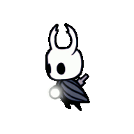
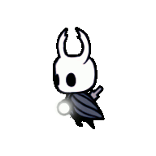
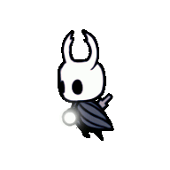

"Hollow Knight" é um jogo de aventura e ação desenvolvido pelo Team Cherry, que cativa os jogadores com sua atmosfera sombria e envolvente, explorando um mundo vasto e misterioso. Na cidade arruinada de Hallownest, os jogadores assumem o papel de um pequeno cavaleiro sem nome, que se aventura em um mundo subterrâneo repleto de criaturas estranhas e perigosas.
A jogabilidade combina elementos de plataforma desafiadora, combate fluido e exploração meticulosa. Os jogadores devem dominar os controles precisos enquanto enfrentam inimigos variados e chefes desafiadores. A progressão do jogo é não linear, incentivando a exploração profunda de cada área para descobrir segredos, melhorias e novas habilidades.
A estética visual de "Hollow Knight" é marcada por sua arte desenhada à mão, que dá vida a um mundo escuro e melancólico. Cada cenário é detalhadamente elaborado, desde as vastas cidades em ruínas até as profundezas das cavernas subterrâneas. A trilha sonora complementa perfeitamente a atmosfera, oscilando entre momentos de calma contemplativa e tensão crescente.
Além da jornada principal, "Hollow Knight" apresenta uma rica narrativa, contada de forma sutil através de diálogos, ambientação e descobertas. Os jogadores podem desvendar os segredos de Hallownest enquanto interagem com uma variedade de personagens intrigantes, cada um com sua própria história e motivações.
